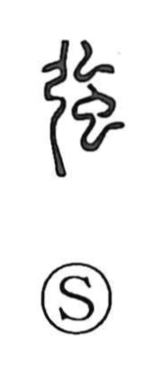

強

Kun: tsuyoi, tsuyomaru, tsuyomeru, shiiru, shiite | On: kyo, go
strong ・ to compel ・ to force ・ to strive
Explanation
強 combines 弘 with 虫. 弘 pictures a bow with its string detached; the small curling part is the loosened cord. 虫 probably concerns gut drawn from a silkworm and used to make a particularly strong bowstring.
The formation therefore identifies strength in the string's tension and resilience. From this come power, robustness, firmness, and vigorous effort. Strength directed against resistance can also mean forcing something, compelling someone, or persisting stubbornly.
The related writing 彊 appears in bronze inscriptions with the territorial meaning of 疆, a boundary. That early boundary use has its own graphic history. The strength sense of 強 centres on the powerful bowstring.